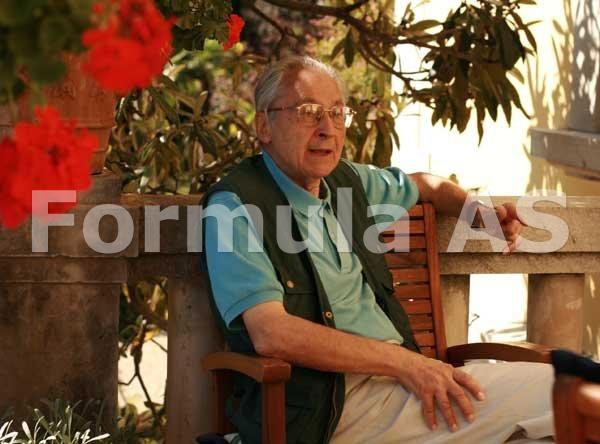
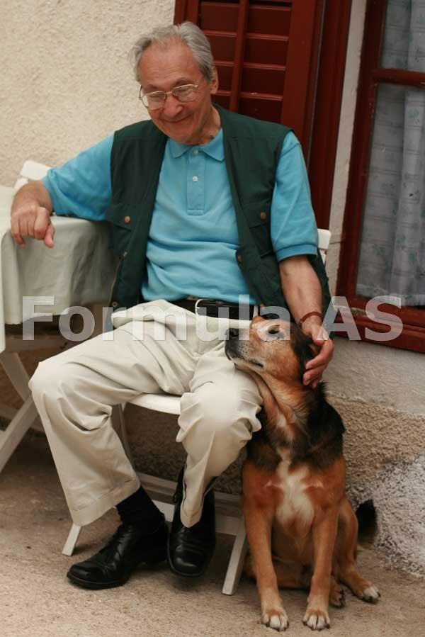
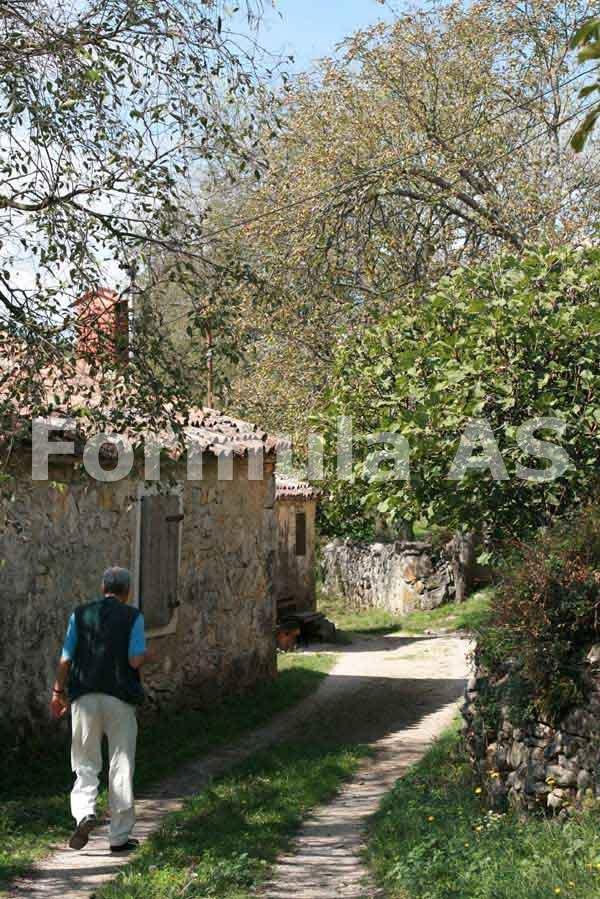

"Ramura istro-românilor face parte din ființa noastră istorică și nu ne putem dispensa de ea ca de un obiect"
 Român get-beget, medic, emigrat în Italia în anul 1969, Petru Emil Rațiu și-a făcut un scop în viață din a încerca să salveze o comunitate de frați ai noștri de limbă veche: istro-românii. I-a vizitat, le-a învățat dialectul și a început să atragă atenția lumii asupra lor. Dr. Rațiu a înființat o asociație pentru cultura istro-română, a fondat o revistă prin care acest dialect să rămână, a publicat zeci de articole despre istro-români în presa din Italia, Elveția și România, a participat la congrese internaționale și a susținut cauza istro-română la Consiliul Europei. În demersurile sale nu a fost ajutat niciodată de autoritățile de la București. Dr. Petru Emil Rațiu ne-a arătat de ce este important ca dialectul român să nu piară și ce se poate face pentru salvarea lui.
- Domnule Petru Rațiu, când i-ați cunoscut pe istro-români și de unde pasiunea aceasta a dvs. pentru graiul lor?
- Întai am fost interesat de aromâni, despre care am început să citesc pe la sfârșitul anilor '70, iar în anul 1988 am participat la un congres al lor la Freiburg. Acolo am întâlnit un eminent profesor ceh, Carlo Lavacek, care era preocupat în cel mai înalt grad de istoria și cultura românilor de la sud de Dunăre. A mers în toate locurile unde i-a putut găsi pe aromâni, megleno-romani și, în cele din urmă, a ajuns și la istro-români. Avea documentări impresionante despre aceste ramuri ale românității; a și scris o carte despre aromâni. La același congres, am cunoscut și un tânăr german, foarte interesat de români, Tede Kahl, care citise mult din istoria noastră și știa câteva cuvinte românești. După zece ani, l-am reîntâlnit în Istria. Era însurat cu o aromânca, vorbea perfect românește și mergea din casă în casă de istro-român, pentru a le afla istoria și a le pătrunde nuanțele dialectului. Fusese pe urmele megleno-românilor, până în Asia Mica, și a publicat o carte despre ei. Tede Kahl este cercetător la Institutul pentru Europa Orientală din Viena.
- Doi străini, un ceh și-un german, v-au deschis ochii asupra istro-românilor...
- De fapt, profesorul Lavacek, cu care am stat nopți în șir de vorbă. Am fost acasă la el și mi-a arătat cărțile unor autori străini și români scrise despre istro-români, documentele, înregistrările și fotografiile pe care le strânsese. Atunci am înțeles că istro-românii fuseseră cercetați lingvistic și istoric, dar că mai important decât asta era să facem ceva să nu dispară dialectul lor, pentru că deja mai erau puțini istro-români. Astăzi, mai sunt câteva sute.
- Și ce-ați făcut?
- Profesorul Lavacek m-a călăuzit, în toamna lui 1990, prin Istria. Mergeam pentru prima oară, nu știam dialectul istro-român, nici sârbește sau croată, nu știam nici drumurile. Așa că profesorul Lavacek, care mai bătuse drumurile pe aici, m-a ajutat enorm.
"Scrisore către fraț rumeri"
- Cum a fost primul dialog cu un istro-român?
 - Prima casa în care am intrat era a doamnei Elena Marmilici, care vorbește un dialect foarte curat și destul de ușor de înțeles de un român. Cum istro-românii sunt primitori, doamna Marmilici m-a servit cu o cană de lapte cald (în istro-română se spune "lapte cåd") și îmi trebuia o linguriță, să-mi pun puțin zahăr, dar nu știam cum să-i spun. Până la urma, m-am trezit spunând: "Vă rog, dați-mi o linguriță!". Spre uimirea mea, doamna Marmilici mi-a adus imediat o linguriță - ca tot așa se cheamă și în istro-română. Am fost bucuros și impresionat de mica mea descoperire.
- Și de la linguriță ați ajuns să scrieți o revistă în istro-română...
- Eu știu să vorbesc istro-româna ca în cărți; nu mi-am însușit o limbă vie, ci o limbă pe care am cunoscut-o pe cale livrescă. Am învățat după textele pe care le-au publicat Iosif Popovici, Traian Cantemir, Lecca Morariu și după gramatica profesorului croat August Kovačec, "Istro-româna actuală." Dar mă pot înțelege bine cu un istro-român.
- De ce ați vrut neapărat să învățați istro-româna?
- Pentru că îmi era mai ușor să mă documentez pe teren. Voiam efectiv să fac ceva pentru a nu se pierde acest dialect al limbii române. După ce am învățat să-l vorbesc, am venit de mai multe ori în Istria, am adunat informații și m-am dumirit cam ce ar fi de făcut pentru istro-români. Între timp, l-am cunoscut pe domnul Ervin Curtis, pe atunci directorul pentru relații externe al portului Trieste, care a început să mă însoțească, fiind la fel de interesat de istro-români. În noiembrie 1993, mi-a venit în minte să instituționalizăm călătoriile noastre, să facem o asociație culturală istro-română. Mi s-au alăturat imediat d-l Curtis, soția sa, care e româncă, un istro-român, Franjo Belulovici, o istro-româncă, Marina Stroligo, cu soțul ei italian. Și, în aprilie 1994, la Trieste, am legalizat asociația, căreia i-am dat numele marelui patriot istro-român Andrei Glavina. Câțiva ani am scos o revistă, "Scrisore către fraț rumeri," într-o limbă istro-română în care am introdus mai multe elemente latine, pe care le pierduse limba vie, din pricina slavizării. Veneam și o distribuiam gratuit printre istro-români.
- După ce i-ați cunoscut pe istro-români prin intermediul unui ceh și le-ați invatat limba după gramatica unui croat, ați făcut o organizație pentru ei, alături de doi italieni inimoși. S-au ocupat mai mult străinii de istro-români decât cei care ar fi trebuit să se simtă întâii chemați, românii?
- I-au cercetat și specialiștii români. Primii au fost însă italienii: Ascoli și apoi Mateo Bartolli, Vasilici, Petru Kandler; pe urma Goran Filipi de la Pola, August Kovačec. De la noi, scrieri majore despre istro-români au Ioan Maiorescu, Lecca Morariu, Traian Cantemir, Petru Iroaie, Richard Sârbu.
- Ce știu despre ei înșiși istro-românii? Își recunosc rădăcinile românești?
- Ei știu că sunt diferiți de croați, dar numai după limbă. Nu-și pun problema că ar fi alt popor. Iar despre români știu ce le-au spus unii și alții, și mai puțin din tradiție. Ei își spun "vlåșchi" sau "jeianschi," dar nu români. Bătrânii vorbesc despre strămoșii lor, care ar fi venit din Transilvania, acum cinci, șase sute de ani. Însă mai există o teorie, după mine mai bine argumentată, care susține că istro-românii provin dintr-o mare masă latină, care se întindea dincolo de munții coastei Dalmate, o populație cu origini în tracii romanizați. Sextil Pușcariu i-a numit "români occidentali". Oamenii aceștia, care vorbeau limba istro-românilor de azi, se numeau morlaci. În anumite documente din secolele XIII - XIV, mai erau numiți "vlahii negri" și "vlahii buni și credincioși". O parte din această populație a fugit de ciumă în anul 1347 și au urcat spre zona muntoasă a peninsulei Istria, la Sușnievița. La 1502 - 1504, un feudal din Istria i-a chemat tot din regiunea morlacilor pe strămoșii istro-românilor care sunt acum la Jeiăni.
- Care este explicația pentru dispariția acestei mase uriașe latine? De ce și-au pierdut limba?
- Cred că au fost două cauze majore. Prima: n-au avut atingere cu romanitatea, n-au ținut legătură de limbă, obiceiuri, cu locuitorii de pe teritoriul României de azi, iar presiunea sârbilor asupra lor a fost mai mare și așa s-au slavizat. Apoi, n-au avut slujba la biserică în limba lor. Liturghia era în slavă. Biserica greacă nu le-a permis să aibă slujire în latină, ca să nu existe apoi o influență catolică asupra lor, dar în timp, istro-românii au trecut la catolicism, căci toți croații sunt catolici. Deci, măsurile de prevedere ale grecilor n-au funcționat după ce și-au schimbat vatra.
În lipsa unei elite, n-a existat conștiința națională
- Probabil că nu au avut nici intelectuali care să le întrețină o conștiință națională.
 - Într-adevăr, au fost rari intelectualii din rândul lor. Pe la 1890 și ceva, Teodor Burada l-a adus în Romania pe Andrei Glavina, la studii. Glavina a devenit conștient de romanitatea lor și s-a întors în Istria ca să lupte pentru afirmarea acestei românități a istro-românilor. Glavina a înființat comuna istro-română Sușnievița de azi, și acolo a fondat o școală istro-română, care a funcționat patru ani, între 1921 și 1925. Cât a funcționat școala, autoritățile române nu i-au trimis nici măcar un manual. Bietul Andrei Glavina făcea cursuri după manualele italienești, pe care le traducea în limba istro-română. Nu a venit nimeni de la guvernul României să vadă cum funcționează școala.
- În afară de Glavina, nu s-a mai încercat ridicarea unei elite istro-române?
- A mai fost o inițiativă particulară a profesorului Sever Pop din Cluj, care a luat doi copii istro-români, pe care i-a școlit în Romania, dar care n-au reușit să facă mai nimic pentru istro-români.
- Deși n-au avut o conștiință națională, au fost unii care s-au declarat români la câteva recensăminte. Cum așa?
- La recensământul din 1902, s-au declarat români vreo 500. Între cele două războaie mondiale, s-au declarat români vreo 2000 de persoane. Presupun că a jucat un rol și școala lui Glavina, care, deși a funcționat numai patru ani, a apucat să arunce sămânța conștiinței de sine a istro-românilor.
"Fără dialectul istro-român, limba română este ciungă"
- Vă rog să ne spuneți, pe scurt, de ce e important să nu dispară dialectul istro-român?
- Pentru că am deveni toți mai săraci. Căci dialectul istro-român este parte a limbii române, iar fără el limba e ciungă. De asemenea, ramura istro-românilor face parte din ființa noastră istorică și nu ne putem dispensa de ea ca de un obiect. În plus, dacă acești oameni și-au păstrat limba, în ciuda tuturor vitregiilor istoriei, fără asistența statului român sau a bisericii, este inadmisibil să asistăm la moartea limbii lor, tocmai acum, în timpuri mult mai blânde, în care minoritățile sunt protejate.
- În ce fel ar putea fi salvată de la pierire limba istro-românilor?
- Ne putem folosi de "Carta limbilor regionale și minoritare a Consiliului Europei," dată în 5 noiembrie 1993, care spune că: "Lăsând la o parte calitatea de minoritate națională sau nu a unor locuitori, dacă acești locuitori de pe teritoriul unui stat vorbesc o limbă diferită de cea a majorității populației, ei au dreptul la învățământ și presă în limba lor, drept de întruniri publice etc." Deci, nu e vorba să te declari minoritate etnică (de așa ceva nici nu vor să audă istro-românii, care sunt, în majoritate croați), ci să ai altă limbă, iar în cazul acesta, ești considerat minoritate culturală. Dar pentru asta, cei care trebuie să acționeze sunt istro-românii, eventual consiliați de organizații neguvernamentale din România sau ajutați de diplomați români. Cred că statul croat n-ar avea nimic împotrivă, pentru că nu este păgubit de recunoașterea unei astfel de minorități compuse doar din câteva sute de persoane. Statul român ar putea să finanțeze fondarea unor școli în limba istro-română, în locurile unde mai sunt copii de istro-români. Ar putea fi deschis un lectorat de limba română la Pola. Apoi, în baza acordului cultural dintre România și Croația din 1993 și în baza Tratatului româno-croat din 1994, ar trebui trimiși doi profesori români care să învețe dialectul istro-român și să fie animatori culturali în satele de istro-români, să le organizeze o casă de cultură la Sușnievița și una la Jeiăni. Înfrățirea între cele două principale sate istro-române – Sușnievița și Jeiăni - și sate românești de lângă frontiera noastră de vest ar fi, de asemeni, benefică. Am vorbit în acest sens cu reprezentanți ai Primăriei din Arad și am găsit înțelegere.
Dar gestul suprem ar fi numirea ca ambasadori și personal diplomatic, în toate statele unde trăiesc minorități românești, de oameni cu dragoste de România, instruiți în istoria și graiul populației românești de acolo (sau al dialectului, în cazul istro-românilor și al macedo-românilor), iar nu de simpli birocrați, care în spatele statului nu văd națiunea, ci o instituție care să le asigure privilegiile și carieră.
Claudiu Târziu
Foto: Bogdana Tihon
November 12, 2007
© 2007 Formula As